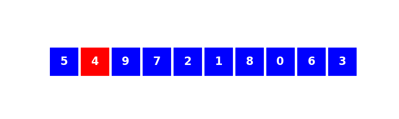

Tri par insertion
| Thème 7 : Algorithmique |
|---|
| 23 | Tri par insertion |
|---|
Préambule⚓︎
Pourquoi étudier des algorithmes de tri ?
Autant ne pas le cacher, ces algorithmes sont déjà implémentés (quelque soit le langage) dans des fonctions très performantes.
En Python, on utilise la fonction sort() :
>>> tab = [4, 8, 1, 2, 6]
>>> tab.sort()
>>> tab
[1, 2, 4, 6, 8]
Le meilleur de nos futurs algorithmes de tri sera moins efficace que celui de cette fonction sort()...
Malgré cela, il est essentiel de se confronter à l'élaboration manuelle d'un algorithme de tri.
Le tri par insertion est le premier des deux algorithmes de tri que nous allons étudier (nous étudierons aussi le tri par sélection).
Ces deux algorithmes ont pour particularité de :
- ne pas nécessiter la création d'une nouvelle liste. Ils modifient la liste à trier sur place.
- ne pas faire intervenir de fonctions complexes.
Tri par insertion⚓︎
Principe et algorithme⚓︎
Considérons la liste [5,4,9,7,2,1,8,0,6,3]
Voici le fonctionnement de l'algorithme :

Vidéo Tri par insertion
Explications :
- On traite successivement toutes les valeurs à trier, en commençant par celle en deuxième position.
- Traitement : tant que la valeur à traiter est inférieure à celle située à sa gauche, on échange ces deux valeurs.
Codage de l'algorithme⚓︎
Algorithme :
Pour toutes les valeurs, en commençant par la deuxième :
- Tant qu'on trouve à gauche une valeur supérieure et qu'on n'est pas revenu à la première valeur, on échange ces deux valeurs.
Tri par insertion (version simple) 
def tri_insertion1(lst):
'''trie en place la liste lst donnée en paramètre'''
for i in range(1, len(lst)): #(1)
k = i #(2)
while k > 0 and lst[k-1] > lst[k] : #(3)
lst[k], lst[k-1] = lst[k-1], lst[k] #(4)
k = k - 1 #(5)
- On commence à 1 et non pas à 0.
- On «duplique» la variable
ien une variablek.
On se positionne sur l'élément d'indicek. On va faire «reculer» cet élément tant que c'est possible. On ne touche pas ài. - Tant qu'on n'est pas revenu au début de la liste et qu'il y a une valeur plus grande à gauche.
- On échange de place avec l'élément précédent.
- Notre élément est maintenant à l'indice
k - 1.
La boucle peut continuer.
Application :
>>> maliste = [7, 5, 2, 8, 1, 4]
>>> tri_insertion1(maliste)
>>> maliste
[1, 2, 4, 5, 7, 8]
A vous
Réaliser le tri par insertion de la liste suivante : [27,10,12,8,11]
Ecrire toutes les étapes.
A vous
Réaliser le tri par insertion de la liste suivante : [9,6,1,4,8]
Ecrire toutes les étapes.
Complexité de l'algorithme⚓︎
def tri_insertion1(lst):
'''trie en place la liste lst donnée en paramètre'''
for i in range(1, len(lst)): #(1)
k = i #(2)
while k > 0 and lst[k-1] > lst[k] : #(3)
lst[k], lst[k-1] = lst[k-1], lst[k] #(4)
k = k - 1 #(5)
- On commence à 1 et non pas à 0.
- On «duplique» la variable
ien une variablek.
On se positionne sur l'élément d'indicek. On va faire «reculer» cet élément tant que c'est possible. On ne touche pas ài. - Tant qu'on n'est pas revenu au début de la liste et qu'il y a une valeur plus grande à gauche.
- On échange de place avec l'élément précédent.
- Notre élément est maintenant à l'indice
k - 1.
La boucle peut continuer.
Démonstration⚓︎
Dénombrons le nombre d'opérations dans le pire des cas, pour une liste de taille \(n\).
- boucle
for: elle s'exécute \(n-1\) fois. - boucle
while: dans le pire des cas, elle exécute d'abord 1 opération, puis 2, puis 3... jusqu'à \(n-1\). Or
Le terme de plus haut degré de l'expression \(\dfrac{n \times (n-1)}{2}\) est de degré 2 : le nombre d'opérations effectuées est donc proportionnel au carré de la taille des données d'entrée.
Ceci démontre que le tri par insertion est de complexité quadratique noté \(O(n^2)\).
Dans le cas (rare, mais il faut l'envisager) où la liste est déjà triée, on ne rentre jamais dans la boucle while : le nombre d'opérations est dans ce cas égal à \(n-1\), ce qui caractérise une complexité linéaire.
3.3 Résumé de la complexité⚓︎
- dans le meilleur des cas (liste déjà triée) : complexité linéaire
- dans le pire des cas (liste triée dans l'ordre décroissant) : complexité quadratique
3.4 Preuve de la terminaison de l'algorithme⚓︎
Est-on sûr que notre algorithme va s'arrêter ?
Le programme est constitué d'une boucle while imbriquée dans une boucle for. Seule la boucle while peut provoquer une non-terminaison de l'algorithme. Observons donc ses conditions de sortie :
while k >= 0 and lst[k-1] > lst[k] :
La condition l[k+1] > l[k] ne peut pas être rendue fausse avec certitude.
Par contre, la condition k >= 0 sera fausse dès que la variable k deviendra négative. Or la ligne
k = k - 1 nous assure que la variable k diminuera à chaque tour de boucle. La condition k >= 0 deviendra alors forcément fausse au bout d'un certain temps.
Nous avonc donc prouvé la terminaison de l'algorithme.
Vocabulaire
On dit que la valeur k est un variant de boucle.
C'est une notion théorique (ici illustrée de manière simple par la valeur k) qui permet de prouver la bonne sortie d'une boucle et donc la terminaison d'un algorithme.
Pour aller plus loin : Preuve de la correction de l'algorithme⚓︎
Les preuves de correction sont des preuves théoriques. La preuve ici s'appuie sur le concept mathématique de récurrence. Principe du raisonnement par récurrence : une propriété \(P(n)\) est vraie si :
- \(P(0)\) (par exemple) est vraie
- Pour tout entier naturel \(n\), si \(P(n)\) est vraie alors \(P(n+1)\) est vraie.
Ici, la propriété serait : « Quand \(k\) varie entre 0 et longueur(liste) -1, la sous-liste de longueur \(k\) est triée dans l'ordre croissant.»
Vocabulaire
On appelle cette propriété un invariant de boucle.
Invariant siginifie qu'elle reste vraie pour chaque boucle.
- quand \(k\) vaut 0, on place le minimum de la liste en l[0], la sous-liste l[0] est donc triée.
- si la sous-liste de \(k\) éléments est triée, l'algorithme rajoute en dernière position de la liste le minimum de la sous-liste restante, dont tous les éléments sont supérieurs au maximum de la sous-liste de \(k\) éléments. La sous-liste de \(k+1\) éléments est donc aussi triée.